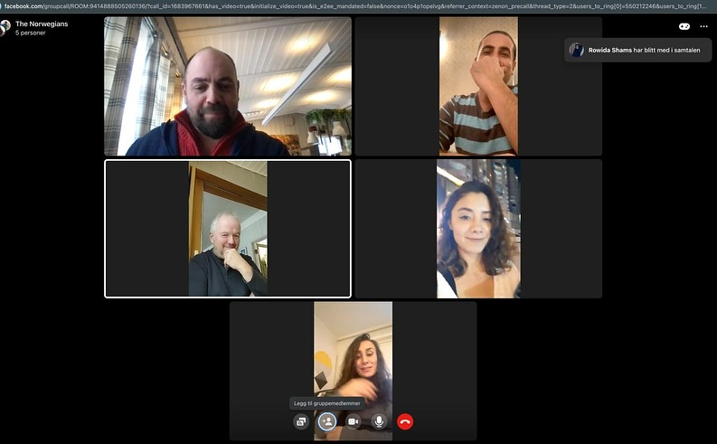
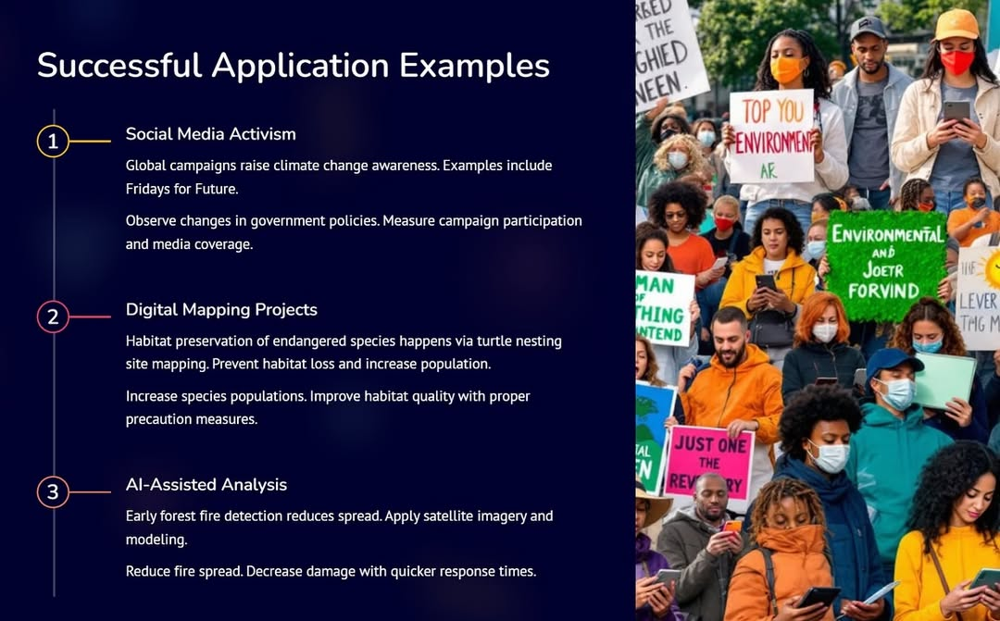
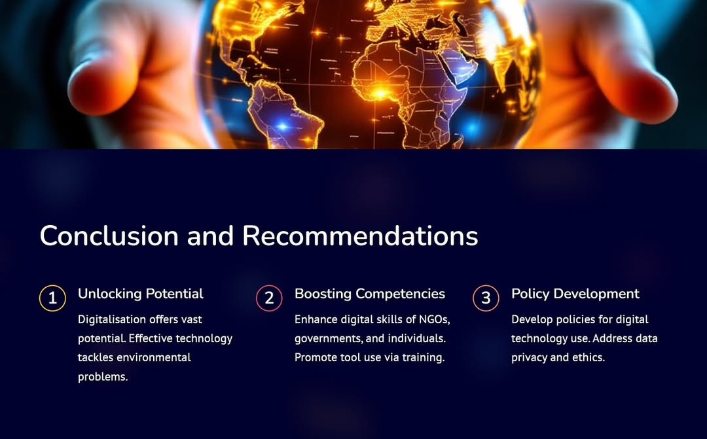

Workshop · Organized by Free European Youth e.V.
The workshop "Digital Practices on Environmental Activities" aims to provide environmental advocates with modern technology-based strategies for nature conservation. It is designed as a practical resource to help individuals navigate digital platforms and improve the efficiency of their ecological initiatives.
The event brings together activists and tech enthusiasts to explore specific tools and software that facilitate environmental protection. Participants gain hands-on experience through live demonstrations, learn how to integrate AI and mapping into their projects, and receive expert tips for more effective digital activism.
The session also promotes a collaborative environment by allowing participants to exchange experiences and brainstorm innovative solutions during group work. Organized as an interactive training, the workshop supports broader goals of environmental literacy and digital transformation for a sustainable future.
The workshop produced a measurable shift in how participants approach environmental conservation through modern technology. They developed a specialized set of technical skills applicable to real-world ecological monitoring, especially for those focusing on data-driven advocacy and remote sensing.
Attendees collaborated with experts from diverse backgrounds, strengthening their digital literacy and establishing a global network for future sustainability projects. The program resulted in a comprehensive directory of green tech tools, practical manuals for online mobilization, a shared database of mapping resources, and a strategic framework for tech-driven activism. Many of these individuals now serve as lead digital coordinators within their own local environmental organizations and educational circles.
"This workshop was a complete game changer for my conservation projects. It showed me how to move beyond traditional methods and use digital tools to turn simple data into a powerful voice for our planet." — Rowida, Norway



Follow our social media or contact us to be informed about future activities.